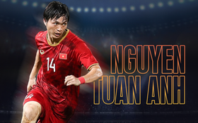
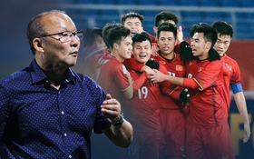

Nỗi phân vân của Quang Hải: Thành huyền thoại Hà Nội FC hay tháo vỏ bọc "vua xứ mù" để vĩ đại hơn?

“Cầu thủ duy nhất ở Việt Nam đủ sức chơi bóng ở châu Âu”- chàng chiến binh với nỗi đau mang nhầm thể xác

Vì sao thầy Park thành công dù cầu thủ Việt Nam bị chê "đi chơi, uống bia trong khi cầu thủ nước ngoài ăn, tập xong là... ngủ để giữ gìn phong độ"?